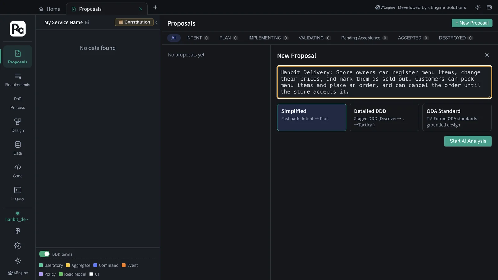
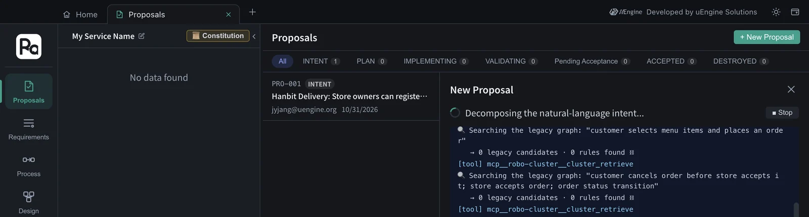
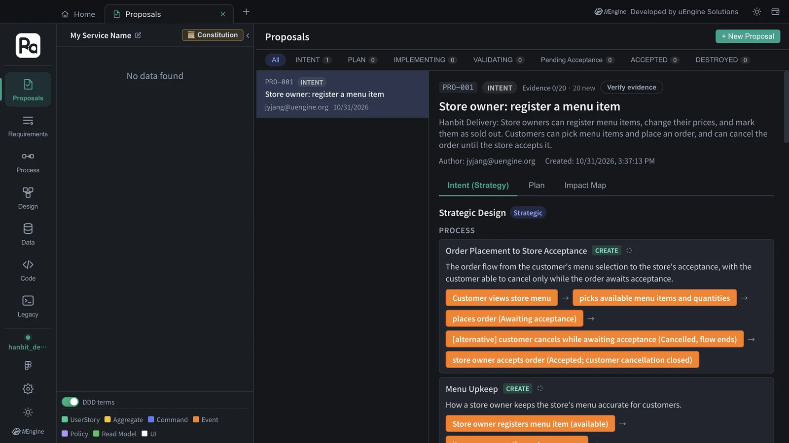
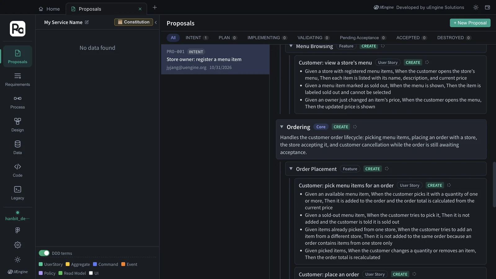
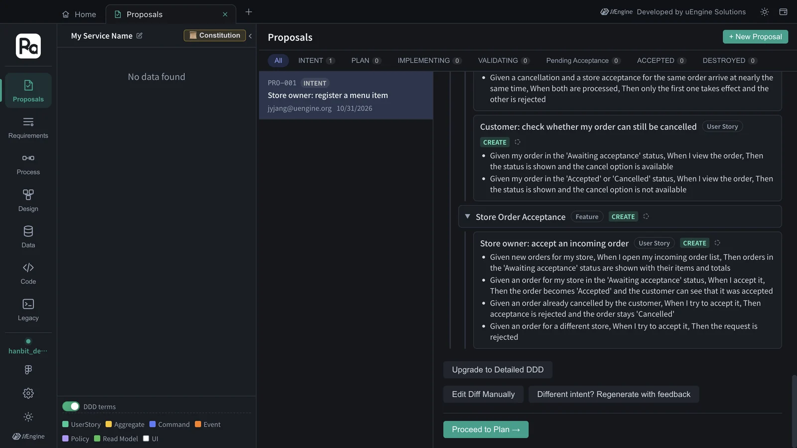
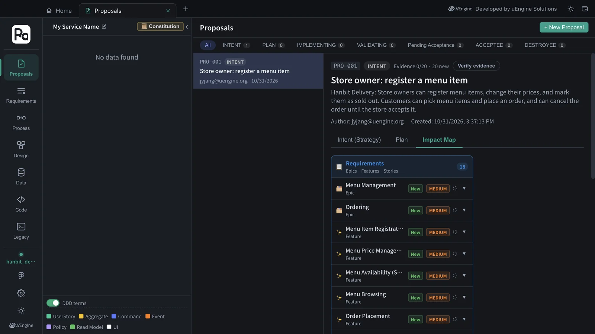

Write “store owners register menu items; customers pick items, order, and can cancel before the store accepts” in plain language to create your first proposal, then read the strategic design Claude Code splits it into (processes · bounded contexts · features · user stories · acceptance criteria) and the Impact Map.
Why a proposal#
In Robo Architect you don't change code directly. When you want to change something, you first create a proposal. One proposal is one change, and it keeps the whole history, from “what are we changing and why” (strategic design) to “how did we build it, and did we build it right” (implementation and validation). So when someone later asks “why does this aggregate exist?”, you open that proposal.
The first stage of a proposal is INTENT. It splits the requirement sentence into the vocabulary of domain-driven design (DDD).
| What you get | Meaning |
|---|---|
| Process | The order in which the work flows. e.g. register menu item → change price → mark sold out |
| Bounded context | An area in which the same word always means the same thing. Classified as Core · Supporting · Generic |
| Feature | A group of functions inside a context |
| User story | “Who · what · why” |
| Acceptance criteria | Given (in this situation) · When (you do this) · Then (this happens). They later become tests as they are (Chapter 7) |
Hands-on 1 — Create a proposal#
- On Home, click the Proposals card to open the Proposals tab.
- Click + New Proposal at the top right.
- Type the requirement into the input box.
Hanbit Delivery: Store owners can register menu items, change their prices, and mark them as sold out. Customers can pick menu items and place an order, and can cancel the order until the store accepts it. - Leave the mode at Simplified (Intent → Plan). Detailed DDD confirms the DDD stages Discover → Decompose → … → Tactical one by one, and ODA Standard designs on the basis of the TM Forum ODA standards.
- Click Start AI Analysis.

The analysis is done by Claude Code on your computer, following the robo-proposal-intent skill. The progress window streams the tools Claude uses and its reasoning as they happen. It's normal for every legacy graph search (cluster_retrieve) to end with “0 legacy candidates · 0 rules found” — no existing code has been analyzed yet (once you analyze existing code in Chapter 13, evidence shows up here). One of the searches may be a Korean rewording of the requirement: the skill instructions are written in Korean, so Claude also tries Korean keywords in case the existing code uses them.

In this tutorial, “Proposal PRO-001 draft has been created.” appeared after about 2 minutes (127 seconds), without any clarification questions. Click View Proposal.
If the AI asks questions
If the requirement is ambiguous, “AI would like to clarify a few things” appears during the analysis with some options. Pick an option or type your own answer and click Submit Answers; to skip, click Continue with current info.
Hands-on 2 — Read the strategic design#
The first section of the proposal detail, Intent (Strategy), is the strategic design. The title is taken from a representative user story (“Store owner: register a menu item”), and the status is INTENT.

This is what came out in this tutorial. Your names and counts may differ a little.
| Kind | Result |
|---|---|
| Processes | Order Placement to Store Acceptance · Menu Upkeep |
| Bounded contexts | Ordering (Core) · Menu Management (Supporting) |
| Features | Menu Item Registration · Menu Price Management · Menu Availability (Sold Out) · Menu Browsing (Menu Management); Order Placement · Order Cancellation · Store Order Acceptance (Ordering) |
| User stories | 9 — 4 for the store owner (register a menu item · change a menu item's price · mark a menu item as sold out · accept an incoming order), 5 for the customer (view a store's menu · pick menu items for an order · place an order · cancel an order before the store accepts it · check whether my order can still be cancelled) |
The description of “Ordering” shows why it is Core — it owns the order lifecycle (awaiting acceptance → accepted / cancelled), this service's core rule. Scroll down and each user story has its acceptance criteria.

For example, “Customer: cancel an order before the store accepts it” came with these criteria.
Given my order in the 'Awaiting acceptance' status, When I cancel it, Then the order becomes 'Cancelled' and the store can no longer accept it
Given my order already accepted by the store, When I try to cancel it, Then the cancellation is rejected and the order stays 'Accepted'
Given an order that belongs to another customer, When I try to cancel it, Then the request is rejected
Given a cancellation and a store acceptance for the same order arrive at nearly the same time, When both are processed, Then only the first one takes effect and the other is rejected
The criteria cover edge cases that weren't in the requirement sentence (an order already accepted, someone else's order, a cancel and an accept arriving at the same time). In Chapter 7 these criteria become the tests that validate the implementation.

The buttons at the bottom let you correct the result.
| Button | What it does |
|---|---|
| Different intent? Regenerate with feedback | Describe in words what was split wrongly, and it decomposes again. e.g. “Only customers can cancel orders” |
| Edit Diff Manually | Edit the strategic design (JSON) directly |
| Upgrade to Detailed DDD | Switch a proposal started in Simplified mode to stage-by-stage DDD decomposition |
| Proceed to Plan → | Lock in this strategic design and move on to the planning stage (Chapters 4 · 5) |
Hands-on 3 — The Impact Map#
The Impact Map section shows what this proposal creates and what it changes in the existing design, by Requirements · Process · Design. The project is empty for now, so everything is New. When you create a second proposal in a project that already has a design, “Modified” items show up too (Chapter 9).

What to check#
PRO-001is in the proposal list with status INTENT.- The strategic design has processes, bounded contexts (at least one Core), features, user stories and acceptance criteria.
Quiz#
- Why do you think the “Ordering” context was classified as Core and “Menu Management” as Supporting?
- The legacy graph search during analysis ended with “0 legacy candidates”. Is something wrong?
- If the result isn't what you expected, how do you fix it? Name two ways.
Answers
- The order lifecycle (awaiting acceptance → accepted / cancelled) and the cancellation rule are Hanbit Delivery's core business rules, while menu management is information management that supports those orders.
- No. There's simply no analyzed existing code yet, so there are no evidence candidates.
- Describe the correction in words in “Different intent? Regenerate with feedback”, or edit the strategic design directly with “Edit Diff Manually”.